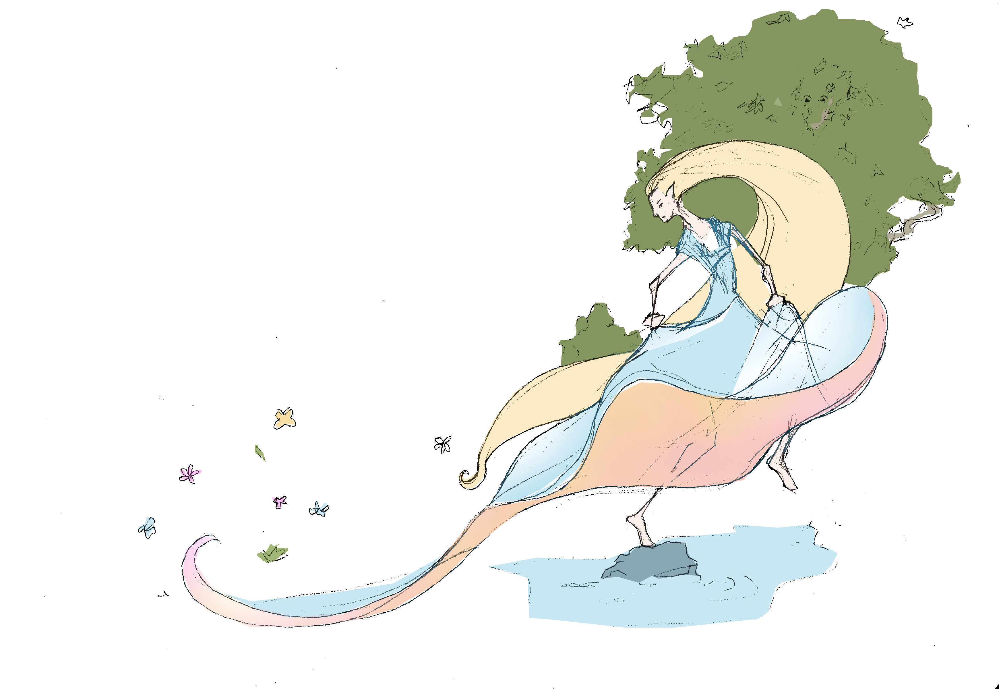
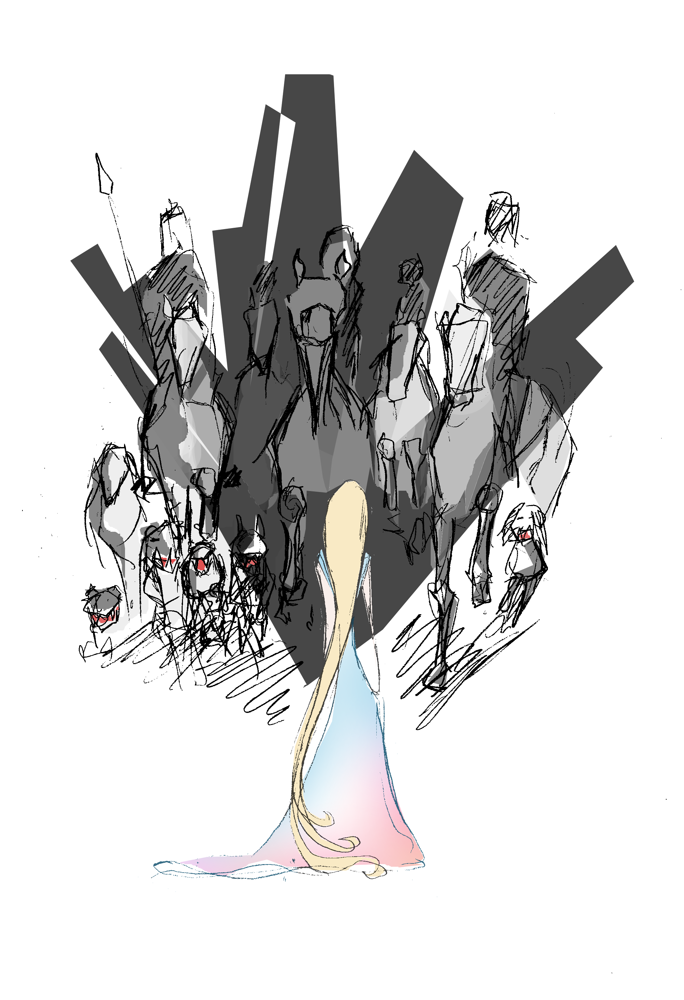
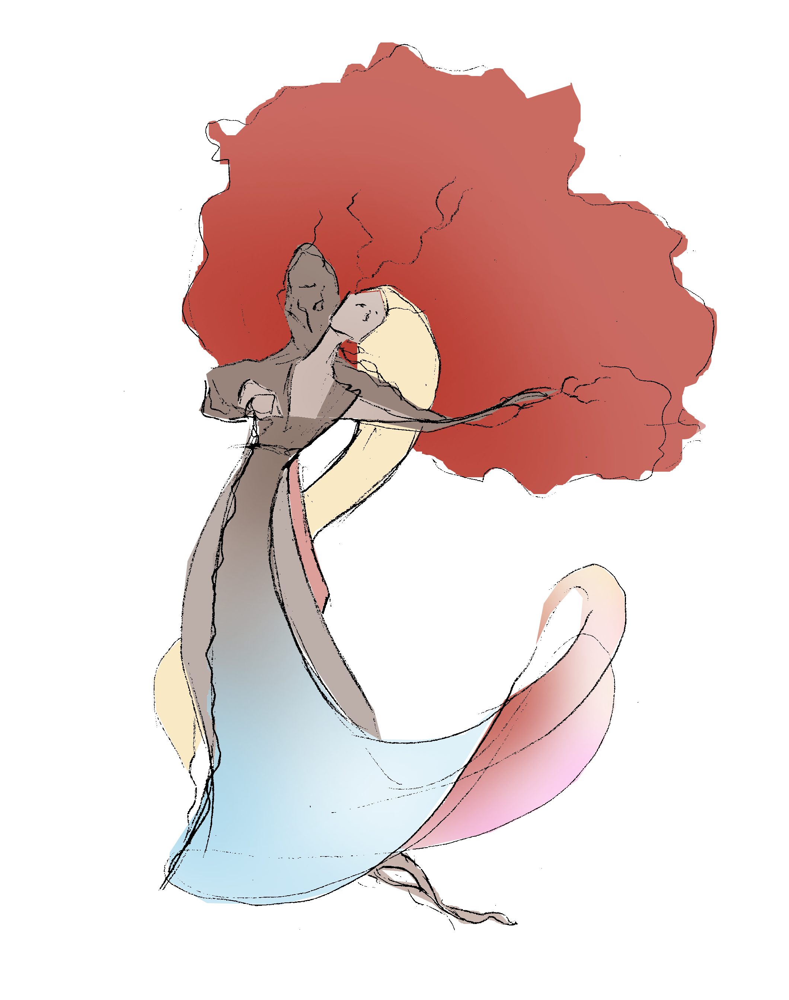

The Elf and the Tree Spirit
In a forest not very far from here, an elf once lived. She loved dancing and singing between the trees and skipping on the stones in the lough. Any day, regardless of the weather, she could be found in the forest.
In the same forest, a tree spirit lived. The dryad could not dance, for his roots were buried deep in the ground. But he loved watching and listening to the elf, his face hidden between his spring-green leaves as he softly hummed along to her song.
One day, strangers showed up in the forest. A pack of hounds stormed ahead, loudly barking, and behind them followed a hunting party comprised of galloping horses and their riders. The elf was so startled she could not move; she would surely have been run over by the hunters had the tree spirit not been attentively following the scene that unfolded.
Quickly, he lowered a branch and drew her high up to his treetop. “Thank you,” whispered the elf when she’d caught her breath. “You saved my life.”
“You’re welcome,” the tree spirit softly replied, caressing her long hair with his twigs. “I’m not sure I should say this, but I’m almost glad the hunters showed up. I’ve been longing to talk to you all spring, but I didn’t dare.”
“I didn’t even know dryads still lived here, else I would have come looking for you much sooner.”
“I think I’m the last one,” sighed the tree spirit. “I’ve not heard anyone since two winters ago. Until you came...”
Now the elf stood up, carefully balancing on the branch, and tiptoed to the trunk. She put her arms around it and gave the bark a light butterfly kiss. “I’ll be here. Now I know that you’re here, I’ll come and talk with you every day. But look, the sun’s already sinking. I have to go home, before she sets completely.” The tree spirit took hold of her once more and gently lowered her onto the mossy ground.

Thus the pair passed the summer together. As soon as the dawn came, the tree spirit heard her singing before she appeared, dancing through the trees. When she became tired of dancing, she came to the dryad, who lifted her up to a comfortable branch where she could rest while they talked or, occasionally, sang until dusk arrived and she had to go home. Elves just happen to need sunlight; they don’t have any leaves which they could use to store energy from the sun to get through the night.
Meanwhile, the forest changed to shades of yellow, orange and red and even the leaves of the dryad’s tree started to lose their green colour. “Winter will be here soon,” he sighed one day.
“Yes, the days are becoming short now,” the elf nodded sadly. “The sun is so low in the sky, even at noon. In a short while I won’t be able to come, until winter has passed. But I would so have loved to dance with you just once.”
“Maybe there’s a way, before sleep takes me,” the tree spirit suggested. “I’ve never tried it myself, but the old dryads used to talk about how on Samhain, at the start of winter, we could leave our trees for just one day. There was always a magnificent dance then, they said. Elves and even humans came to celebrate with us. But that’s a very long time ago.”
“Well, we can try,” smiled the elf. “Samhain is only three sunrises away. We’ll dance all day then!”

The next three days in the elven hill, the elf had trouble falling asleep. She hadn’t wanted to mention it to the tree spirit, but she too was the last of her kind here in the forest. During the summer, the other elves had moved elsewhere, frightened by the hunting party that had dared to venture so close to their home, fearful that the humans would discover them. But she had stayed behind as she hadn’t wanted to leave her new friend all alone.
Eventually dawn broke on the morning of Samhain. It was a short day so, wanting to make the most of it, the elf was already waiting when the sun finally rose and she hurried to the tree spirit. Stretching in the early rays of the sun, he saw her coming and focused hard on breaking free of the wood. Thus he stood before her: his curly hair the auburn shade of his tree’s autumn leaves and a rough grey-brown tunic over a skin of the same colour. “Wow, you’re so handsome!” smiled the elf as she saw him standing there and she hugged him tightly. “I’ve been wanting to do that for months now!” she laughed.
“As have I,” he chuckled, wrapping his strong arms around her slender body. “Sometimes it’s really hard, being a tree. Shall we dance, then?”
Happy to finally really be in each other’s arms, they danced all day, before sitting down exhausted by the waterside. “Do you really have to go back?” the tree spirit asked as dusk approached. “We’re both alone – I heard the other elves leave while you visited me day after day. Can’t we stay together this winter?”
“I’ve never stayed outside at night,” the elf replied, “but I’m willing to try for you. You came out of your tree for me, after all.”
“One last dance then, before the sun sets?” the tree spirit suggested and so they danced until the last rays disappeared. Then, they both felt themselves stiffen in the middle of the dance, while the elf was leaning back against the tree spirit, and bark formed over both dancers. The elf had become a tree spirit too, and in that moment they knew, they’d be together always.
If you ever find yourself in their forest, look around closely. Then you’ll see, they are dancing there still even now.